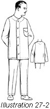
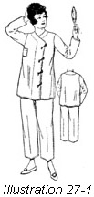

1926—The New-Way Course in Fashionable Clothes-Making
Lesson 27—Women's Pajamas
The Vogue of Pajamas for Women (illustrations 27-1 and 2)
More and more women are making clothes with a regard for comfort rather than attraction. The day of the much beribboned and over-trimmed nightgown has given way to a more sensible vogue of simple untrimmed gowns—and today the pajama for women is quite the vogue. It is a practical garment, easy to launder and comfortable to wear.
The making of pajamas is simple—both men's and women's pajamas are made in similar manner. Silk is often used for this garment, madras or any soft cotton material. Sometimes, for cooler weather, flannelette or French Flannel is used. Perhaps the most favored material of all is silk pongee because it is so soft and comfortable to the skin, and is so extremely easy to launder.
Before proceeding with the making of the pajamas, study the pattern carefully and be sure that you are able to identify each part. Lay out the pattern on the material, as outlined for previous garments, and cut. Make all construction marks.
- If necessary, alter the pattern to fit. Be sure that sufficient seam allowances are made.
- The making of the blouse part of the pajamas is the same as the making of the middy blouse in Lesson 26. The neck and front are finished with a fitted facing as taught in Lesson 8.
- The bottom of the coat and the end of the sleeves are hemmed.
- Pockets are a necessary part of the pajamas. On the man's pajamas, the breast pocket is on the left hand side. On a woman's the pocket is on the right hand side. Similarly, the buttons on the woman's garments are on the left hand side and on the man's on the right hand side
- Women's trousers are made as are the bloomers in Lesson 29, page 59, except that the bottom of the legs are long and are finished with a hem while the top has a casing through which a tape is run on which to adjust the fullness and hold the garment in place.
- Men's trousers are made with a fly in front. Otherwise they are exactly the same in construction as the woman's. The casing at the top for the tape is made either with a facing or the tape is run through a hem. The pattern used will indicate allowances at the top for a hem, or the facing pattern will be included.
- Fly closings are taught in Lesson 10. A fly should be made on the left hand side of the garment and set underneath the edge for buttonholes. On the right hand side the extension on the pattern will be faced with a fitted facing. (Lesson 8.) This is for the buttons which are sewed on when the garment is completed.
The One-Piece Pajama
Women's pajamas are very often made in one piece. This type of pajama is more easily made than the two-piece garment, and is found more comfortable and satisfactory for summer wear. But when heavy material, such as flannelette, is used the two-piece pajama is found to be more practical.
In making the one-piece pajamas, bear in mind that to be comfortable the garment must have plenty of fulness. Select a cool material such as crepe or Nainsook. As before, prepare material and pattern for cutting, and proceed to cut according to the instruction guide being sure to make all construction marks, to mark the center lines, and to leave seam allowances.
- Baste the parts of the garment together.
- Fit and be sure that the garment is not skimpy but plenty roomy enough to permit of full freedom of movement.
- French seam all seams.
- The neck and sleeve ends may be finished in any way desired—with lace edging, embroidery or binding. Binding is perhaps the wisest choice, for the pajama is a tailored garment with should really be devoid of all trimming.
- At the bottom of the legs have a small ruffle, simply bound or trimmed to match the trimming at the neck. Above this ruffle should be a casing through which elastic may be run.
Of course there are elaborate pajamas, too—for after all what would a pajama-party be without dainty lavender-and-green pajamas with their many-colored bows and rosettes! But these gay pajamas are confined almost entirely to the children who love bright colors and a great deal of trimming. If young daughter suddenly decides that she cannot be happy without a pair of very elaborate pajamas, make them just as you would make the simple pajamas—but add as much embroidery and trimming as you please.
Lessons 25, 26, 27
Questions
- What is the first requirement of good taste in children's clothes?
- What type of material should be used for children's clothes?
- What material is suited for boy's school and play suits?
- From a current magazine or catalog, cut a picture of a party dress suited to a girl of about fifteen. Why did you select it?
- Why should a child be taught the value of quality in clothes?
- What points should be kept in mind in planning maternity clothes?
- How may wrinkling of the fitted dress lining, for an expectant mother be avoided?